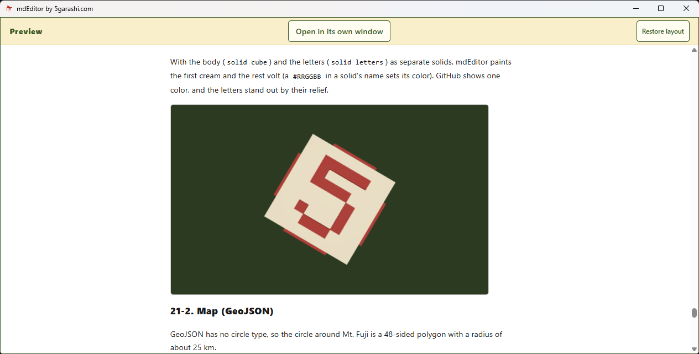

One Markdown. A visual world.
Open with a rotating 3D model and a brief mdEditor introduction. Tour diagram-test.en.md, then explore the main editing, viewing, import and export features.
Real recordings use source build 1.0.12. The current Store build number is unverified.
MP4PDFExplore, then learn

- Rotate 3D by dragging; zoom with the wheel
- Live editing, synced scrolling, detached preview and contents
- Load maps and video inside your document
- Import Word; export Word, PDF, HTML and PNG
Current guideMicrosoft StoreRecording notes
Internet loading was allowed for this recording. Word import does not preserve colors or layout. Diagrams and equations export to Word as images. No automatic numerical calculation.
Main features
- Live preview beside your text, scrolling together
- Preview on a second display, following the line you edit
- Also a viewer: the preview fills the window
- Mermaid and Graphviz diagrams and math, offline
- 3D models (STL) you turn with the mouse
- Maps (GeoJSON), with OpenStreetMap when you allow it
- Colored code for about 40 languages, kept in PDF and Word
- Table of contents from your headings, updated with one press
- GitHub-style alerts, front matter, and collapsible sections
- Videos play right in the preview
- One-click PDF that looks exactly like the preview
- Opens Word, HTML, e-mail, CSV, JSON, Jupyter Notebooks, and images
- Saves as HTML, PNG, Word, CSV, JSON, Jupyter Notebook, or text
- Drop or paste pictures straight into your document
- Safe saving and automatic crash recovery
- Opens Shift_JIS, EUC-JP, and UTF-8 files correctly
- Internet images, videos, and maps load only when you allow them
- No ads, no tracking, no account
- Everything from the keyboard, with custom shortcuts
- Screen reader support, read-aloud, and dark mode